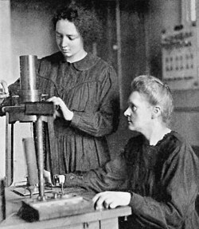

1867
Sinh tại Warsaw
Maria Skłodowska chào đời trong một gia đình coi trọng học tập.
Ý nghĩa: Khởi đầu của hành trình vượt qua nhiều giới hạn xã hội.
HÀNH TRÌNH VÀ BƯỚC NGOẶT
Từ những năm tháng học tập tại Paris đến các phát hiện làm thay đổi khoa học, hành trình của Marie Curie được tạo nên bởi nhiều cột mốc và lựa chọn quan trọng.

KHOA HỌCCÁC CỘT MỐC
Maria Skłodowska chào đời trong một gia đình coi trọng học tập.
Ý nghĩa: Khởi đầu của hành trình vượt qua nhiều giới hạn xã hội.
Bà theo học tại Sorbonne, chuyên sâu vật lý và toán học.
Ý nghĩa: Mở ra cơ hội tiếp cận môi trường nghiên cứu khoa học.
Hai nhà khoa học bắt đầu hành trình nghiên cứu và hợp tác lâu dài.
Ý nghĩa: Sự hợp tác khoa học trở thành phần quan trọng trong công việc của bà.
Những nghiên cứu về quặng pitchblende dẫn đến việc công bố hai nguyên tố mới.
Ý nghĩa: Đánh dấu bước tiến lớn trong nghiên cứu phóng xạ.
Curie nhận giải cùng Pierre Curie và Henri Becquerel.
Ý nghĩa: Ghi nhận vai trò của nghiên cứu về hiện tượng bức xạ.
Bà được trao giải nhờ nghiên cứu về radium và polonium.
Ý nghĩa: Khẳng định đóng góp độc lập và sâu rộng của bà trong hóa học.
Bà góp sức phát triển việc sử dụng thiết bị X-quang lưu động trong Thế chiến thứ nhất.
Ý nghĩa: Đưa kiến thức khoa học vào hỗ trợ chăm sóc người bị thương.
Bà mất ngày 4/7/1934 sau nhiều năm làm việc với vật liệu phóng xạ.
Ý nghĩa: Di sản nghiên cứu tiếp tục ảnh hưởng đến khoa học và y học.
BƯỚC NGOẶT QUAN TRỌNG NHẤT

BƯỚC NGOẶC
Việc nghiên cứu các chất có tính phóng xạ đã giúp Curie và cộng sự nhận ra những đặc tính chưa được giải thích đầy đủ của vật chất. Đây là bước ngoặt vì nó đưa công việc nghiên cứu của bà đến những câu hỏi mới về nguyên tố và bức xạ, đồng thời đặt nền tảng cho các công trình được ghi nhận sau này.
NHÌN LẠI
Thành công của Marie Curie là kết quả của nhiều năm học tập, nghiên cứu và cống hiến không ngừng nghỉ. Từ những ngày tháng khó khăn tại Paris đến những lần miệt mài nghiên cứu trong phòng thí nghiệm, bà luôn kiên trì theo đuổi đam mê khoa học. Hai giải Nobel trong lĩnh vực Vật lý và Hóa học không chỉ ghi dấu tài năng của bà mà còn chứng minh rằng ý chí, sự bền bỉ và niềm đam mê có thể tạo nên những thành tựu vượt thời đại.